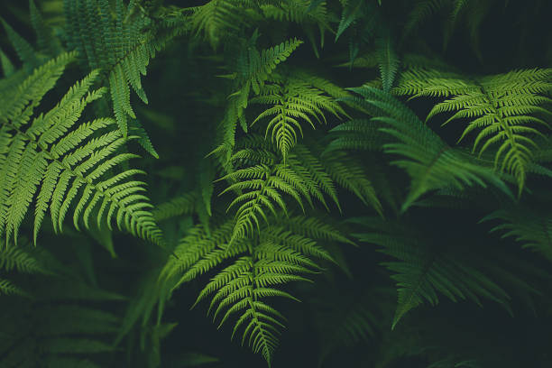
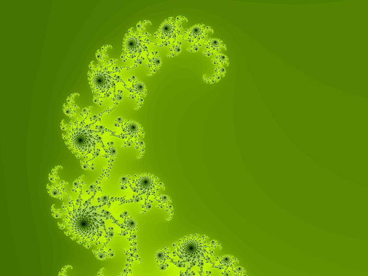
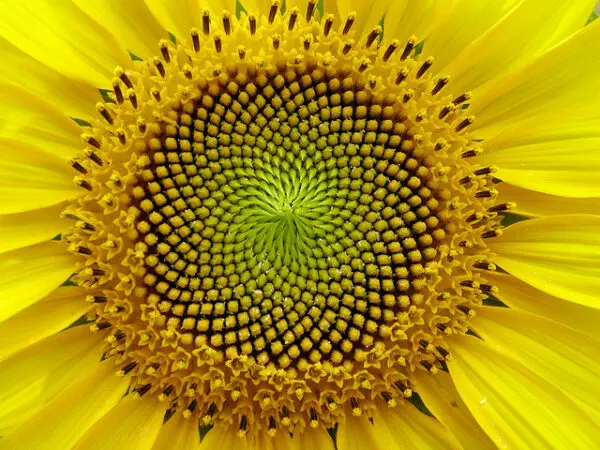
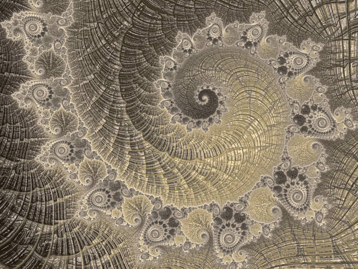
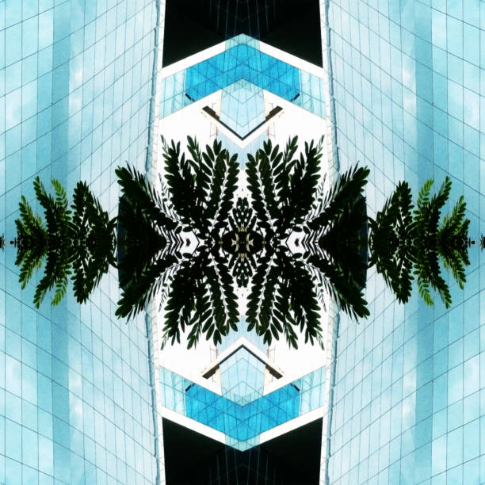
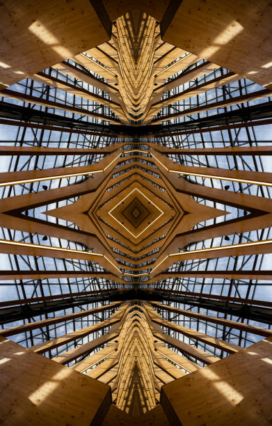
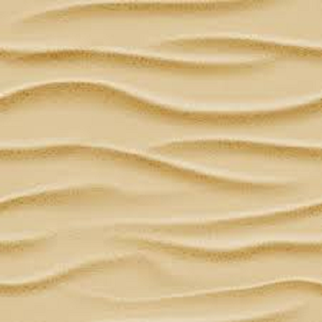
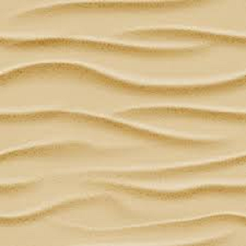
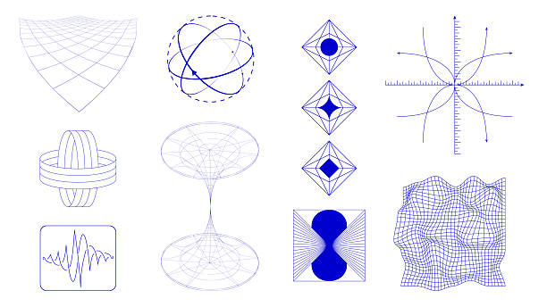
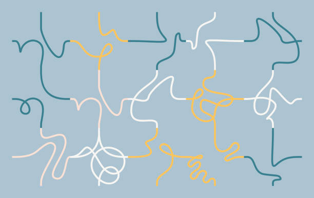

Фракталы в природе


Загадка: Почему лист и целое дерево повторяют один узор?
Спирали Фибоначчи


Загадка: Почему золотое сечение так часто встречается в природе?
Симметрия и зеркала


Загадка: Можно ли разрезать симметричный рисунок на одинаковые части?
Интерференция волн
 

Загадка: Что произойдёт, если наложить две волны с одинаковой длиной, но разной фазой?
Графики и кривые


Загадка: Какая кривая соединяет два простых гармонических движения?
Попробуй сам найти закономерности и узоры в природе!